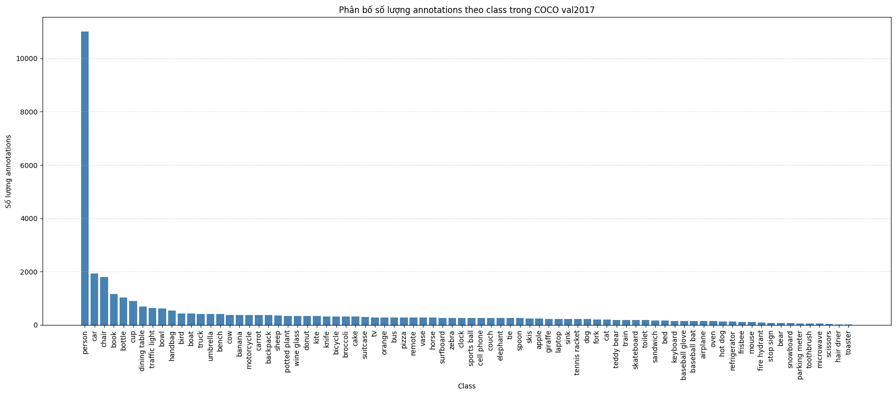
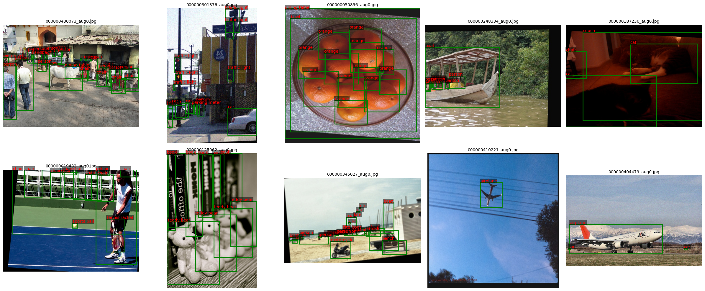
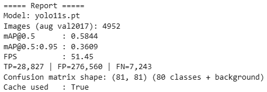
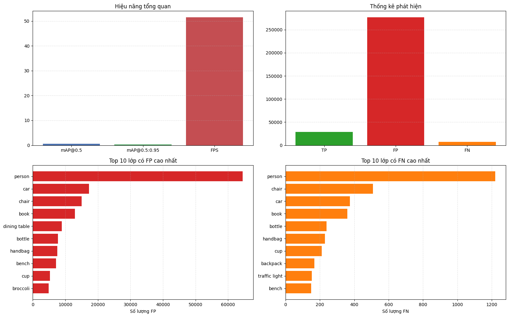
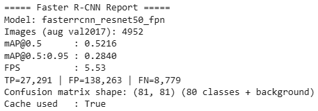
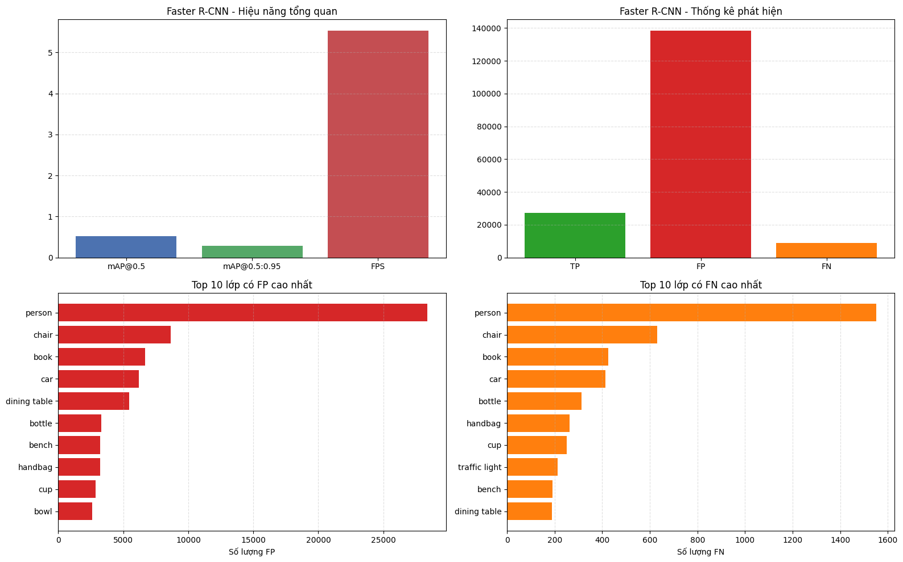
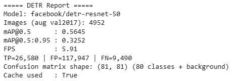
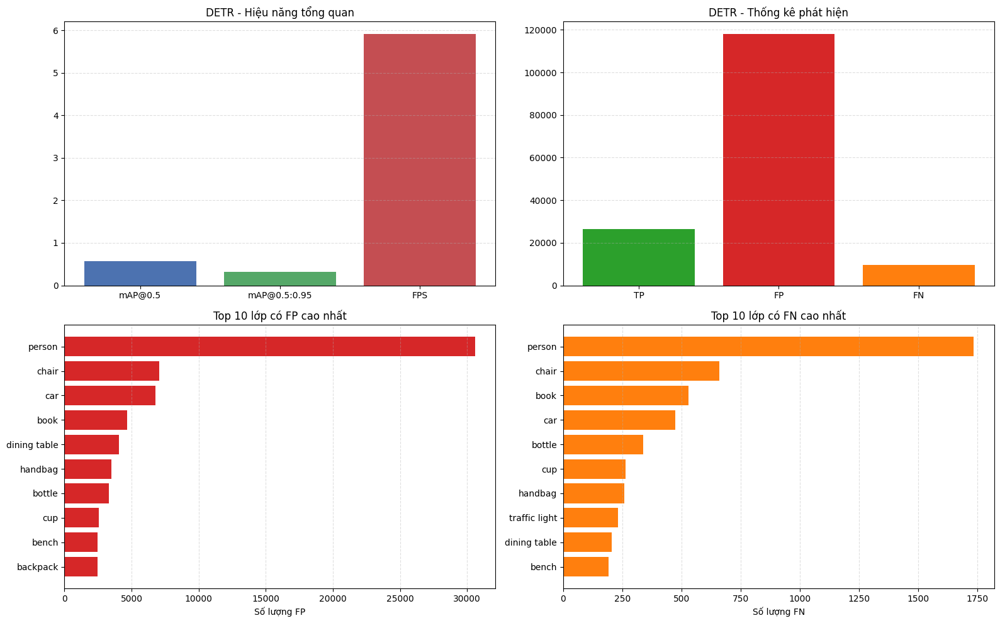
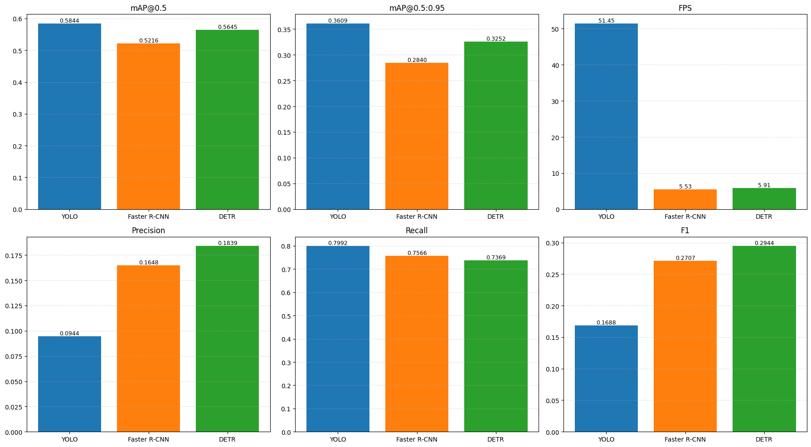
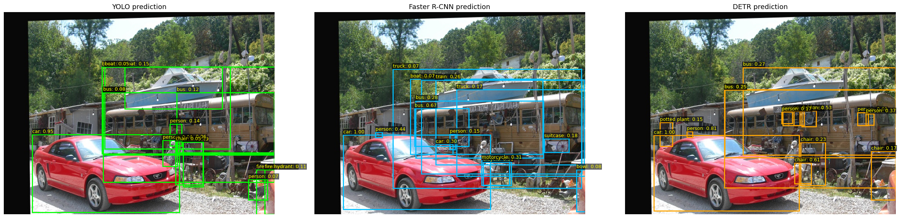

🔗 Tài nguyên Dự án
Object Detection
1. Giới thiệu
Bài toán
Phát hiện đối tượng trong ảnh, xác định bounding box và gán nhãn phân loại cho mỗi đối tượng.
Tập dữ liệu
COCO 2017 validation set (val2017) làm validation set cho các mô hình pretrained.
Mục tiêu — So sánh các mô hình pretrained:
YOLO
One-stage (CNN)
Faster R-CNN
Two-stage (CNN)
DETR
One-stage (Transformer)
Metrics đánh giá:
mAP@0.5
mAP@0.5:0.95
FPS
Tập dữ liệu & Chuẩn bị
3. Chuẩn bị và Tăng cường dữ liệu

Pipeline: Albumentations + bbox_params (đồng bộ ảnh & bbox)
- Flip: Lật ngang → học đối xứng.
- Affine: Scale, dịch, xoay, shear → bền với biến dạng hình học.
- Color (OneOf): Sáng/contrast, HSV, CLAHE → thích nghi ánh sáng.
- Blur/Noise (OneOf): Blur, motion blur, noise → chịu nhiễu/mờ.
- bbox_params: Giữ bbox hợp lệ (format COCO, lọc bbox nhỏ/che khuất, clip).
Kết quả: Dữ liệu đa dạng hơn → mô hình tổng quát tốt hơn.

Kết quả các Mô hình
4. Mô hình YOLO
Kết quả đánh giá

Trực quan hóa kết quả đánh giá

5. Mô hình Faster R-CNN
Kết quả đánh giá

Trực quan hóa kết quả đánh giá

6. Mô hình DETR
Kết quả đánh giá

Trực quan hóa kết quả đánh giá

So sánh & Phân tích lỗi
7. Bảng so sánh các chỉ số hiệu suất

7.3 Phân tích lỗi (Error Analysis)
Dự đoán từ các mô hình

1) Đặc trưng dữ liệu COCO
- Mất cân bằng lớp (lớp
personchiếm ưu thế). - Vật thể nhỏ/xa → dễ FN, bbox kém chính xác.
- Che khuất, chồng lấp → nhầm lớp, tách bbox kém.
- Bối cảnh phức tạp → tăng FP.
2) Theo kiến trúc mô hình
- YOLO: Ưu tiên tốc độ → dễ FP; nhạy với
conf/iou; yếu với object nhỏ. - Faster R-CNN: Phụ thuộc proposal (RPN) → thiếu proposal gây FN; nhầm lớp gần nhau.
- DETR: Kém với object nhỏ/đậm đặc; số query cố định; dễ FN nếu tuning chưa tốt.
3) Lỗi phổ biến
- Nhầm giữa các lớp tương tự (book/bottle/cup, car/truck/bus).
- Sai lệch bbox → IoU thấp → bị tính FP/FN.
- Nhận nhầm nền thành object.
4) Hướng cải thiện
- Tối ưu
conf,iou,max_det. - Đánh giá theo kích thước object.
- Tăng cường dữ liệu (object nhỏ, occlusion, ánh sáng).
- Dùng ensemble/calibration giảm FP.
- Phân tích và tinh chỉnh theo từng class.
💡 Tổng kết
| Nhóm kiến trúc | Đại diện | Ưu điểm | Nhược điểm | Phù hợp khi |
|---|---|---|---|---|
| One-stage (CNN) | YOLO | Tốc độ cao, pipeline đơn giản, triển khai realtime tốt. | Dễ tăng FP, nhạy với ngưỡng conf/iou, thường kém hơn ở object nhỏ/khó. |
Cần suy luận nhanh, tài nguyên giới hạn. |
| Two-stage (CNN) | Faster R-CNN | Độ chính xác thường ổn định, localization tốt hơn trong nhiều bối cảnh. | Suy luận chậm hơn, chi phí tính toán cao, pipeline phức tạp hơn. | Ưu tiên chất lượng hơn tốc độ. |
| Transformer-based | DETR | Thiết kế end-to-end, giảm phụ thuộc hậu xử lý thủ công, biểu diễn ngữ cảnh tốt. | FPS thấp hơn, nặng tài nguyên, có thể yếu với object nhỏ/dày đặc nếu chưa tinh chỉnh kỹ. | Bài toán cần mô hình hóa quan hệ toàn cục, chấp nhận tốc độ thấp hơn. |